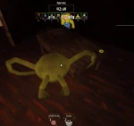
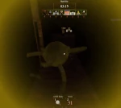

The Weird Yellow Smiling Thing abbreviated as W.Y.S.T/WYST, initially teased May 27th, 2024, and officially added on July 12th, 2024, is the eleventh monster in Pillar Chase 2 after The Forest King. He is, as the name suggests, a yellow smiling thing. He is an original monster based off of Smile-Ghost from Innyume, an obscure Japanese horror game, and is also largely based on Pac-Man. He can be unlocked for 1500 coins in the shop. (Previously 1980 before the Black Friday Event's conclusion).
| 
 When pressing 1 WYST will crouch down and spit out a white ball in the direction the camera is facing that will ricochet off of objects and explodes after around 4-5 seconds, or after hitting a player, dealing 40 DMG and dealing some knockback. While the Gobble Bomb is still intact, WYST can use his M1 to launch the ball forward for a longer distance shot. If used during Frenzy, he spits out three bombs instead, spitting them in an arc farther ahead of him instead of just spitting them in front of him. Has a 5 second cooldown. |
 When pressing 2 WYSTmakes a low growling noise as his body slumps down and shakes violently, after which he enters Frenzy Mode, highlighting all players for a few seconds. In this mode, his movement speed and attacks become slightly faster, but his stamina will drain faster, and he will make a slight screaming noise while in Frenzy Mode, making it easier for players to know where he is. This lasts for 14 seconds, and has a cooldown of 35 seconds. Killing someone with M1 while in Frenzy increases Frenzy's duration. |